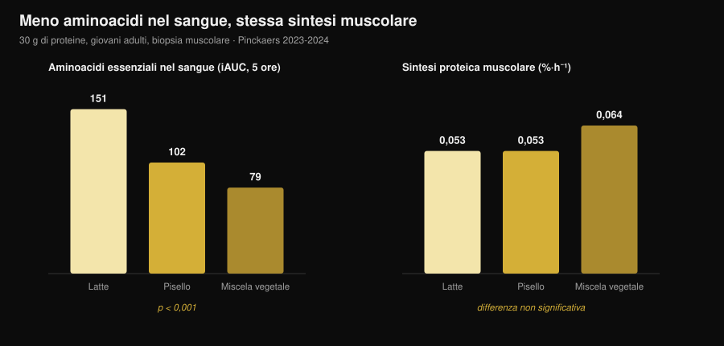
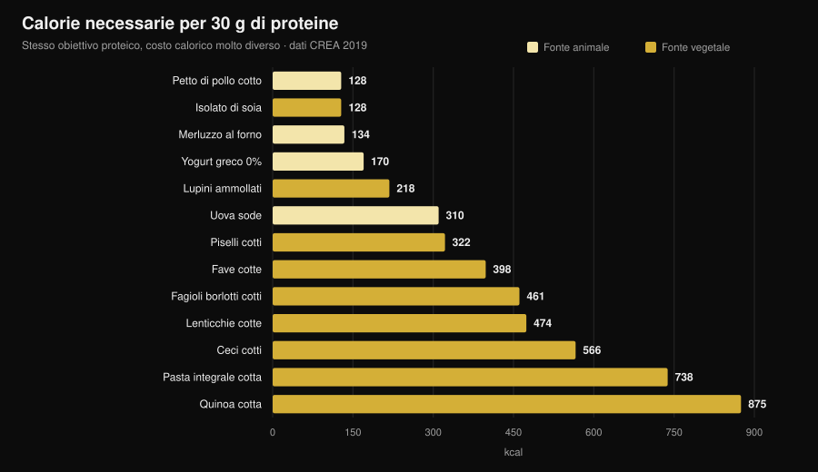

Proteine vegetali o animali per i muscoli?
"Le proteine vegetali sono incomplete, non costruiscono muscolo." È una delle frasi più ripetute in palestra, e nasce da un meccanismo che sulla carta regge: meno leucina, meno sintesi proteica. Poi qualcuno è andato a misurarlo davvero, con biopsie muscolari, e il risultato non è quello che ti aspetti. Ma c'è un secondo numero, quello che nessuno ti dice, ed è lì che la scelta diventa concreta.

In breve
- Su cinque studi con biopsia muscolare, nessuna differenza. Trenta grammi di proteine da pisello, grano, mais, patata o da una miscela vegetale producono la stessa sintesi proteica muscolare di 30 g di proteine del latte (gruppo di Maastricht, 2021-2024).
- Il meccanismo "serve più leucina" non regge alla prova. Con la miscela vegetale gli aminoacidi essenziali nel sangue sono quasi la metà (iAUC 79 contro 151), eppure la sintesi muscolare è identica.
- A lungo termine lo stesso. Quattro studi di 12-16 settimane su vegani, vegetariane e miscele vegetali non trovano differenze su massa, spessore muscolare o forza.
- La meta-analisi più grande vede una piccola differenza a favore dell'animale (SMD −0,20 sulla massa), ma si concentra sulle fonti vegetali diverse dalla soia e sui regimi interamente vegetali, non sul confronto soia/latte.
- Il costo vero è calorico. Per 30 g di proteine servono 99 g di petto di pollo e 128 kcal, oppure 435 g di lenticchie cotte e 474 kcal (tabelle CREA). Quasi quattro volte le calorie.
Da dove nasce il dubbio
La proteina non è un blocco unico: è una sequenza di aminoacidi, e nove di questi il corpo non li sa fabbricare (si chiamano essenziali). Uno in particolare, la leucina, funziona da interruttore: oltre una certa soglia nel sangue, accende la macchina che costruisce proteina muscolare.
Le fonti vegetali, in media, hanno meno leucina e meno aminoacidi essenziali per grammo rispetto a carne, uova, pesce e latticini, e in molti casi vengono digerite un po' peggio. Da qui la conclusione logica: meno leucina → meno sintesi → meno muscolo.
Il ragionamento è corretto. Il punto è che un ragionamento corretto non è un risultato: va misurato.
L'esperimento che misura davvero
Tra il 2021 e il 2024 il gruppo di Luc van Loon all'Università di Maastricht ha pubblicato cinque studi randomizzati in doppio cieco con lo stesso disegno: giovani adulti, infusione di fenilalanina marcata, biopsie muscolari ripetute per 5 ore, 30 g di proteina vegetale contro 30 g di proteina del latte.
| Proteina vegetale testata | Sintesi muscolare vegetale | Latte | Esito |
|---|---|---|---|
| Grano (Pinckaers 2021) | 0,056 %·h⁻¹ | 0,053 %·h⁻¹ | p = 0,56 |
| Patata (Pinckaers 2022) | 0,053 %·h⁻¹ | 0,050 %·h⁻¹ | p = 0,54 |
| Miscela grano+mais+pisello (Pinckaers 2023) | 0,064 %·h⁻¹ | 0,053 %·h⁻¹ | p = 0,08 |
| Pisello (Pinckaers 2024) | 0,053 %·h⁻¹ | 0,053 %·h⁻¹ | p = 0,96 |
| Mais (Pinckaers 2024) | 0,053 %·h⁻¹ | 0,053 %·h⁻¹ | p = 0,90 |
Cinque fonti vegetali diverse, cinque pareggi. E nello studio sulla patata la misura è stata fatta anche dopo una seduta di pesi: 0,069 contro 0,064 %·h⁻¹ a favore della patata, p = 0,52. Anche nella condizione che interessa a chi si allena, nessuna differenza.

Il grafico mostra il punto che smonta il meccanismo. Gli aminoacidi essenziali che arrivano nel sangue nelle 5 ore dopo il pasto (iAUC) sono 151 mmol·300 min·L⁻¹ con il latte, 102 con il pisello, 79 con la miscela vegetale: una differenza enorme, statisticamente solidissima (p < 0,001 in entrambi i confronti). La sintesi muscolare, però, non si muove.
Tradotto: a 30 grammi di proteina, la soglia è già superata da tutti. Il "picco di leucina" conta quando la dose è piccola; su una porzione vera smette di decidere.
E a lungo termine, su persone che si allenano?
La sintesi proteica misurata in 5 ore è un indizio, non un risultato. Il muscolo si vede a mesi. Qui gli studi disponibili sono quattro, e vanno letti insieme.
Vegani contro onnivori, 12 settimane (Hevia-Larraín 2021, Sports Medicine). Diciannove vegani abituali e 19 onnivori, proteine portate a 1,6 g per kg al giorno con soia da una parte e whey dall'altra, due sedute a settimana supervisionate. Massa magra della gamba +1,2 kg in entrambi i gruppi; sezione del retto femorale +1,0 contro +0,9 cm²; 1RM alla leg press +97 contro +117 kg. Nessuna differenza significativa su nessuna variabile.
Dieta vegana ad alte proteine, 10 settimane (Monteyne 2023, Journal of Nutrition). Programma a volume alto, 5 sedute a settimana, circa 2 g/kg. Massa magra +2,6 kg negli onnivori e +3,1 kg nel gruppo vegano; volume della coscia +8,3% in entrambi; sezione delle fibre +33% contro +32%. Lo stesso studio aveva già verificato, con acqua deuterata, che la sintesi proteica giornaliera non differiva.
Miscela vegetale contro whey, 12 settimane (Santini 2025, JISSN). Quarantaquattro ragazzi non allenati, 45 g al giorno di integrazione divisi su tre pasti, soia e pisello da una parte, whey dall'altra. Massa magra totale +2,4 contro +2,5 kg, sezione del vasto laterale +0,9 contro +1,3 cm², 1RM alla leg press +64 contro +63 kg. Tutte le differenze fra gruppi non significative.
Donne vegetariane strette, 16 settimane (Martini 2026, Scandinavian Journal of Medicine & Science in Sports). Venticinque vegetariane e 20 non vegetariane, due sedute a settimana, nessuna integrazione, dieta abituale. Spessore della coscia da 81,2 a 85,6 mm nelle vegetariane e da 80,8 a 87,3 mm nelle altre; forza massimale composita da 106,9 a 132,6 kg contro 107,9 a 133,1 kg. Nessuna differenza fra gruppi — e questo nonostante le vegetariane mangiassero meno proteine: 1,0 contro 1,3 g/kg (p = 0,002).
Quest'ultimo dato è il più interessante e il più fragile insieme: suggerisce che in soggetti poco allenati, con uno stimolo di due sedute a settimana, anche 1,0 g/kg basta a non perdere nulla. Ma è uno studio non randomizzato (nessuno sceglie a caso di essere vegetariano) e su donne non allenate: non autorizza a dire che 1 g/kg sia abbastanza per chi si allena duro.
Perché le meta-analisi dicono una cosa leggermente diversa
Qui il quadro si complica, ed è giusto dirlo.
La revisione sistematica più ampia sul tema (Reid-McCann 2025, Nutrition Reviews, 43 studi randomizzati, 30 in meta-analisi) trova che rispetto alla proteina animale la proteina vegetale lascia meno massa muscolare: SMD −0,20 (IC 95% −0,37 / −0,03; p = 0,02), con effetto concentrato negli under 60 e assente sopra i 60 anni.
Ma la stessa analisi, scomposta, dice esattamente dove sta la differenza:
- soia contro proteine del latte: nessuna differenza (SMD −0,02; IC −0,20 / 0,16; p = 0,80), su 17 studi;
- animale contro vegetali diversi dalla soia (riso, chia, avena, patata): −0,58 (IC −1,06 / −0,09), su 5 studi;
- animale contro regimi interamente vegetali: −0,51 (IC −0,91 / −0,11), su 7 studi;
- forza muscolare: nessuna differenza (14 studi). Prestazione fisica: nessuna differenza (5 studi).
La meta-analisi precedente (Lim 2021, Nutrients, 16 studi) arriva allo stesso posto: nessun effetto della fonte su massa magra assoluta e forza, piccolo vantaggio animale sulla percentuale di massa magra e, negli under 50, +0,41 kg di massa magra (IC 0,08-0,74).
La lettura onesta è questa. La differenza esiste, è piccola, riguarda la massa e non la forza, e scompare quando il confronto è fra due proteine isolate di buona qualità. Dove ricompare è nei regimi alimentari interamente vegetali — cioè quando il problema non è più la qualità della proteina, ma la quantità che si riesce a mangiare.
Il problema vero: il conto calorico
Ed eccolo, il numero che quasi nessuno mette nel confronto. Ho preso le tabelle di composizione degli alimenti del CREA e calcolato quanto cibo serve, e con quante calorie, per arrivare a 30 g di proteine — la porzione usata in tutti gli studi sopra.

| Alimento (come si mangia) | Grammi per 30 g di proteine | kcal | Fibra |
|---|---|---|---|
| Petto di pollo, cotto in padella | 99 g | 128 | 0 g |
| Isolato proteico di soia | 35 g | 128 | 0 g |
| Merluzzo surgelato, cotto al forno | 171 g | 134 | 0 g |
| Yogurt greco 0% | 333 g | 170 | 0 g |
| Lupini ammollati | 183 g | 218 | 5 g |
| Uova sode | 242 g (≈5 uova) | 310 | 0 g |
| Piselli freschi cotti | 309 g | 322 | 20 g |
| Fave secche sgusciate, cotte | 273 g | 398 | 8 g |
| Fagioli borlotti, cotti | 435 g | 461 | 30 g |
| Lenticchie, cotte | 435 g | 474 | 36 g |
| Ceci, cotti | 429 g | 566 | 25 g |
| Pasta integrale, cotta | 405 g | 738 | 14 g |
| Quinoa, cotta | 625 g | 875 | 23 g |
Un pasto da 30 g di proteine costa 128 kcal con il pollo e 474 kcal con le lenticchie. Se ne fai tre al giorno, la differenza è di oltre 1.000 kcal: in definizione è semplicemente impossibile, e anche in mantenimento riempie il piatto di carboidrati che magari volevi mettere altrove.
C'è poi il volume. Quattrocentotrentacinque grammi di lenticchie cotte sono due piatti pieni, e portano con sé 36 g di fibra: più del doppio della quota giornaliera raccomandata in una sola seduta. Non è un problema di salute, è un problema di stomaco e di gestione.
Due eccezioni meritano attenzione, e sono proprio quelle che chiudono il cerchio con gli studi. L'isolato proteico di soia costa 128 kcal per 30 g di proteine, esattamente come il petto di pollo: è la proteina vegetale che nelle meta-analisi non perde mai contro il latte, ed è anche quella che non costa calorie. E i lupini, poco usati in Italia fuori dallo street food, stanno a 218 kcal: il miglior alimento vegetale intero della tabella.
Se stai impostando le proteine in una fase di taglio calorico, il ragionamento è lo stesso che facevamo parlando di quante proteine servono in definizione: non cambia il grammo, cambia quello che ci viene insieme.
Cosa dice davvero la ricerca
"le proteine vegetali non attivano la sintesi muscolare come quelle animali". Cinque studi con biopsia, cinque pareggi: grano p = 0,56, patata p = 0,54, pisello p = 0,96, mais p = 0,90, miscela p = 0,08 (a favore del vegetale).
"senza abbastanza leucina non si costruisce muscolo". Con la miscela vegetale gli aminoacidi essenziali nel sangue sono il 48% in meno rispetto al latte (79 contro 151 iAUC, p < 0,001) e la sintesi è identica. A 30 g la soglia è già passata.
"da vegetariano o vegano non puoi crescere". Quattro studi di 10-16 settimane, su vegani, vegetariane e miscele vegetali, non trovano differenze su massa, spessore, sezione o forza.
"la fonte non conta proprio niente". La meta-analisi più grande trova −0,20 di SMD sulla massa a sfavore del vegetale, concentrato negli under 60. Piccolo, ma non zero.
"basta mangiare più proteine vegetali". Sulla carta sì; nel piatto quelle proteine arrivano con 3-4 volte le calorie e molta più fibra.
"la soia regge il confronto con il latte". Su 17 studi randomizzati, SMD −0,02 (IC −0,20 / 0,16): la differenza è indistinguibile da zero.
"la soia abbassa il testosterone negli uomini". Meta-analisi su 41 studi clinici, testosterone totale misurato in 1.753 uomini: nessun effetto su testosterone totale e libero, estradiolo, estrone e SHBG, a qualunque dose e durata (Reed 2021).
"serve combinare cereali e legumi a ogni pasto". Negli studi di Maastricht una singola fonte vegetale pareggia con il latte senza alcuna combinazione, ma nessun lavoro ha confrontato direttamente "combinare a ogni pasto" contro "combinare nella giornata" su esiti di ipertrofia.
Come applicarlo
- Guarda il totale giornaliero, non la fonte. Tutti gli studi che pareggiano lo fanno a 1,6-2 g per kg di peso al giorno. È quello il numero che decide.
- Alza la dose per pasto se la fonte è vegetale. Gli studi usano 30 g di proteina vera per porzione. Con fonti vegetali punta lì, non a 15-20 g.
- Usa soia e lupini come base. Sono le due fonti vegetali che costano meno calorie per grammo di proteina, e la soia è l'unica con un confronto diretto e neutro contro il latte.
- Conta le calorie che arrivano insieme. Se un pasto proteico vegetale ti costa 400 kcal invece di 130, togli quelle calorie da qualche altra parte o il bilancio salta.
- Vai a scalare sulla fibra. Passare da 15 a 35 g di fibra al giorno in una settimana si paga. Aumenta gradualmente e distribuisci i legumi su più pasti.
- Se la quota resta bassa, integra. Isolato di soia o miscela soia-pisello: negli studi a 45 g al giorno hanno dato gli stessi risultati delle whey.
- Fai attenzione alla B12 e al ferro, non alle proteine. In una dieta senza alimenti animali i nutrienti da monitorare con il medico sono quelli, non la quantità di muscolo.
Prova Nurvan — le proteine contate sul database CREA
Il punto di questo articolo è che il grammo di proteina non basta: contano le calorie e il volume che ci arrivano insieme. Su Nurvan la sezione nutrizione lavora sulle tabelle ufficiali CREA, quindi quando registri 200 g di lenticchie cotte vedi subito proteine, calorie e fibra reali di quell'alimento, non una media di internet. Imposti il target proteico in g/kg, e l'app ti dice a che punto sei e quanto ti costa arrivarci; accanto trovi carichi, RIR e misure, così vedi se quelle proteine stanno davvero diventando muscolo. Prova Nurvan.
Domande frequenti
Le proteine vegetali fanno crescere il muscolo come quelle animali?
Sì, a parità di quantità. Cinque studi randomizzati con biopsia muscolare mostrano la stessa sintesi proteica con 30 g di proteina da grano, patata, pisello, mais o miscela vegetale rispetto a 30 g di proteina del latte, e quattro studi di 10-16 settimane non trovano differenze su massa e forza. La meta-analisi più ampia vede una differenza piccola (SMD −0,20) a favore dell'animale sulla massa, ma non sulla forza, e nessuna differenza fra soia e latte.
Quante proteine al giorno servono con una dieta vegetariana o vegana?
Gli studi che mostrano risultati identici agli onnivori usavano 1,6-2 g per kg di peso corporeo al giorno. Un trial su donne vegetariane poco allenate non ha trovato differenze nemmeno a 1,0 g/kg, ma con solo due sedute a settimana e un livello di partenza basso: non è un dato da trasferire a chi si allena intensamente.
Serve combinare cereali e legumi nello stesso pasto?
Non risulta necessario per la sintesi muscolare: negli studi di Maastricht una singola fonte vegetale (pisello, grano, mais o patata) a 30 g pareggia con il latte senza alcuna combinazione. Variare le fonti nell'arco della giornata resta una buona idea per il profilo aminoacidico complessivo.
La proteina della soia abbassa il testosterone?
No. La meta-analisi più aggiornata ha raccolto 41 studi clinici, con testosterone totale misurato in 1.753 uomini e testosterone libero in 752, e non ha trovato alcun effetto di proteine di soia o isoflavoni su testosterone, estradiolo, estrone o SHBG, indipendentemente da dose e durata.
Leggi anche
- Quante proteine servono davvero in definizione — la quota proteica quando le calorie sono poche.
- Cosa mangiare quando sei infortunato — proteine e calorie nelle settimane di stop.
- Ricomposizione corporea: perdere grasso e guadagnare muscolo — come si incastrano proteine e deficit.
Fonti
- Pinckaers PJM, Kouw IWK, Hendriks FK, et al., 2021. No differences in muscle protein synthesis rates following ingestion of wheat protein, milk protein, and their protein blend in healthy, young males. British Journal of Nutrition 126(12):1832-1842. PMID 33597056 · DOI 10.1017/S0007114521000635
- Pinckaers PJM, Hendriks FK, Hermans WJH, et al., 2022. Potato Protein Ingestion Increases Muscle Protein Synthesis Rates at Rest and during Recovery from Exercise in Humans. Medicine & Science in Sports & Exercise 54(9):1572-1581. PMID 35438672 · DOI 10.1249/MSS.0000000000002937
- Pinckaers PJM, Kouw IWK, Gorissen SHM, et al., 2023. The Muscle Protein Synthetic Response to the Ingestion of a Plant-Derived Protein Blend Does Not Differ from an Equivalent Amount of Milk Protein in Healthy Young Males. The Journal of Nutrition 152(12):2734-2743. PMID 36170964 · DOI 10.1093/jn/nxac222
- Pinckaers PJM, Smeets JSJ, Kouw IWK, et al., 2024. Post-prandial muscle protein synthesis rates following the ingestion of pea-derived protein do not differ from ingesting an equivalent amount of milk-derived protein in healthy, young males. European Journal of Nutrition 63(3):893-904. PMID 38228945 · DOI 10.1007/s00394-023-03295-6
- Pinckaers PJM, Weijzen MEG, Houben LHP, et al., 2024. The muscle protein synthetic response following corn protein ingestion does not differ from milk protein in healthy, young adults. Amino Acids 56(1):8. PMID 38315260 · DOI 10.1007/s00726-023-03377-z
- Hevia-Larraín V, Gualano B, Longobardi I, et al., 2021. High-Protein Plant-Based Diet Versus a Protein-Matched Omnivorous Diet to Support Resistance Training Adaptations: A Comparison Between Habitual Vegans and Omnivores. Sports Medicine 51(6):1317-1330. PMID 33599941 · DOI 10.1007/s40279-021-01434-9
- Monteyne AJ, Coelho MOC, Murton AJ, et al., 2023. Vegan and Omnivorous High Protein Diets Support Comparable Daily Myofibrillar Protein Synthesis Rates and Skeletal Muscle Hypertrophy in Young Adults. The Journal of Nutrition 153(6):1680-1695. PMID 36822394 · DOI 10.1016/j.tjnut.2023.02.023
- Santini MH, Erwig Leitão A, Mazzolani BC, et al., 2025. Similar effects between animal-based and plant-based protein blend as complementary dietary protein on muscle adaptations to resistance training: findings from a randomized clinical trial. Journal of the International Society of Sports Nutrition 22(1):2568047. PMID 41059835 · DOI 10.1080/15502783.2025.2568047
- Martini GL, Schemes MB, Strey B, et al., 2026. No Differences in Muscular Adaptations to Long-Term Resistance Training Between Young Strict Vegetarian and Non-Vegetarian Women. Scandinavian Journal of Medicine & Science in Sports 36(2):e70224. PMID 41684167 · DOI 10.1111/sms.70224
- Reid-McCann RJ, Brennan SF, Ward NA, et al., 2025. Effect of Plant Versus Animal Protein on Muscle Mass, Strength, Physical Performance, and Sarcopenia: A Systematic Review and Meta-analysis of Randomized Controlled Trials. Nutrition Reviews 83(7):e1581-e1603. PMID 39813010 · DOI 10.1093/nutrit/nuae200
- Lim MT, Pan BJ, Toh DWK, et al., 2021. Animal Protein versus Plant Protein in Supporting Lean Mass and Muscle Strength: A Systematic Review and Meta-Analysis of Randomized Controlled Trials. Nutrients 13(2):661. PMID 33670701 · DOI 10.3390/nu13020661
- Reed KE, Camargo J, Hamilton-Reeves J, et al., 2021. Neither soy nor isoflavone intake affects male reproductive hormones: An expanded and updated meta-analysis of clinical studies. Reproductive Toxicology 100:60-67. PMID 33383165 · DOI 10.1016/j.reprotox.2020.12.019
Dati di composizione degli alimenti: CREA — Centro di ricerca Alimenti e Nutrizione, Tabelle di composizione degli alimenti, aggiornamento 2019 (alimentinutrizione.it). Le fonti scientifiche sono state recuperate tramite PubMed.
Segnale di tendenza all'origine dell'articolo: a ottobre 2026 escono a pochi giorni di distanza due lavori molto ripresi sul confronto vegetale/animale (Martini 2026 e Santini 2025) e la domanda di ricerca su ricomposizione corporea e proteine vegetali resta in crescita (Exploding Topics, dati al 17 ottobre 2026).
Giammaria Loi è il fondatore di Nurvan. Si allena con i pesi dal 2012, lavora come personal trainer e coach certificato FIPE dal 2013 e gareggia nel powerlifting a livello nazionale dal 2018. Ogni articolo che firma parte dagli studi scientifici e arriva a ciò che funziona davvero in palestra.
Nota: contenuto informativo, non sostituisce il parere di un medico o professionista. Se segui una dieta senza alimenti di origine animale, parla con il medico del monitoraggio di vitamina B12, ferro e vitamina D.